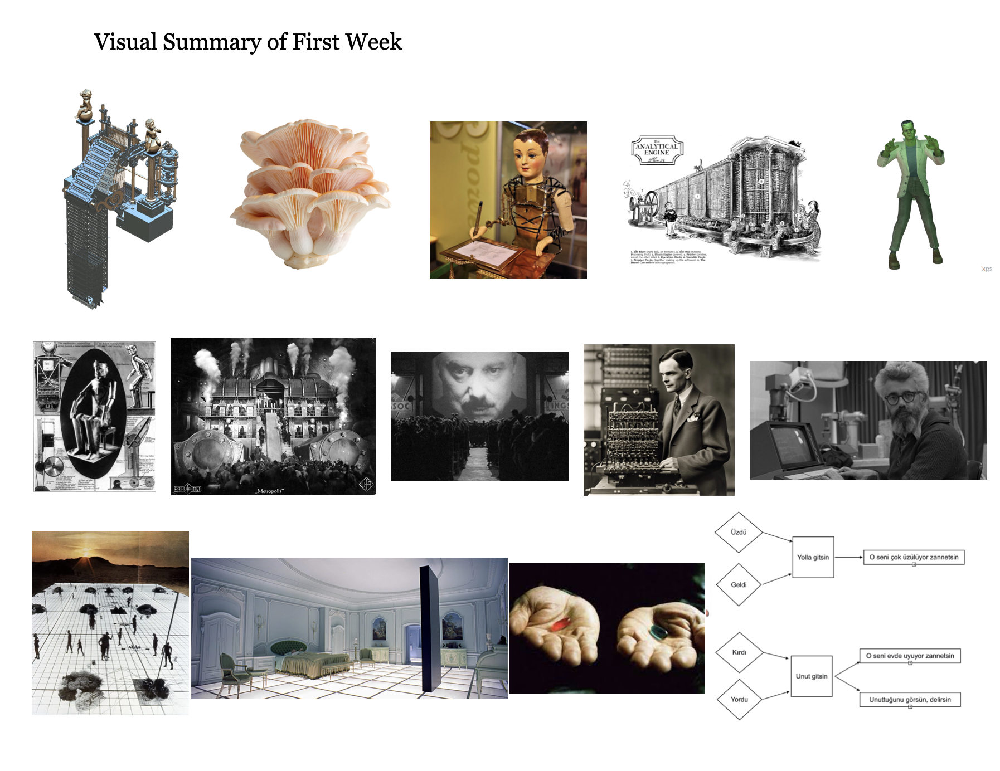
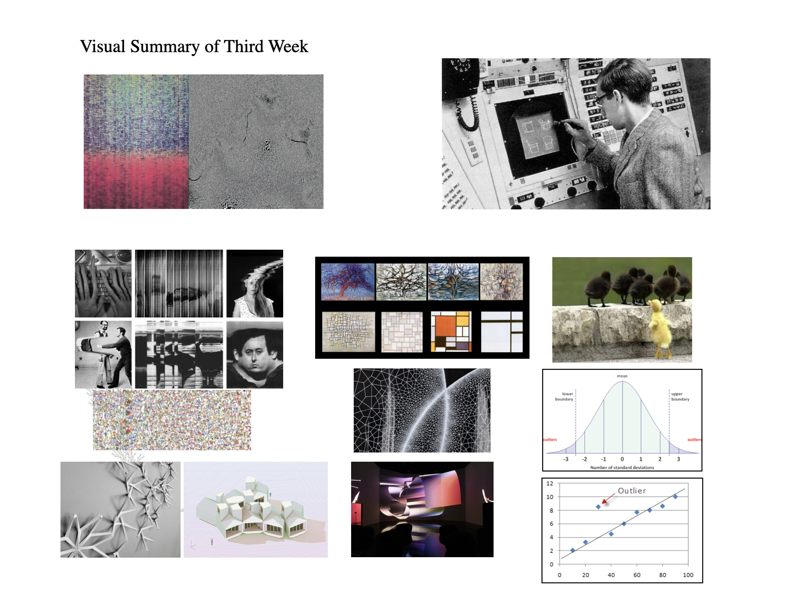

I'm a San Francisco-based data scientist, creative technologist, and yoga teacher.
For nine years, I’ve designed and led causal inference, large-scale data analysis, and AI explainability projects at Amazon Web Services and Gap,
working end-to-end from experimental design to deployment in production systems. I also completed an artistic residency at the Gray Area Foundation for the Arts, where I built interactive, data-driven installations, and have taught at institutions like Google, MUTEK, and Salesforce. This past year, I have been on a career sabbatical to independently study philosophy, AI ethics, and philosophy of mind.
My understanding of the world is shaped by years of teaching gentle, yin, and restorative yoga. This practice has taught me to deliberately shift my awareness between mind and body, navigating the states needed for coding, writing, teaching, or making art; and giving form to what I find.
I am interested in exploring how these configurations of self and attention might extend into artificial systems.
WRITE-UPS & TEACHING SAMPLES
Below are selected works from my Substack, blog, and course designs that show how I translate abstract ideas into clear inquiries and applications.
These excerpts are adapted from my Substack posts and presented here as conceptual experiments. Three of these concepts (1.1, 1,2 & 1.3) are implemented as test designs for illustration purposes.
1. Definition of Consciousness
Consciousness is a rhythm-bound process that allocates attention at moments of choice, balancing safety with expansion.
It gives form—whether in precise skill, open perspective, or deep rest—by shaping how we respond when inner and outer boundaries meet.
These moments, which I call friction points, arise when the automatic yields to the deliberate.
At these thresholds, perception widens: breath steadies, patterns are negotiated, and awareness optimizes its own interest—preserving stability while exploring possibility.
Consciousness is most visible here, where tolerance and safety meet, and attention becomes an active, creative force.
In practice, this can be framed as a system property: the capacity to detect its own thresholds and reallocate focus, resources, or strategy in real time when confronted with them.
I would look for friction points in machine decision-making: moments where an internal state signals a threshold—conflict, uncertainty, or competing “interests”—and the system allocates resources to resolve it.
This involves detecting when the system pauses or shifts strategy in a way that balances self-preservation (stability, safety of function) with goal expansion (exploring new states or solutions).
I’d design environments where safe but suboptimal choices compete with riskier, potentially rewarding ones, and observe if the machine adapts in contextually nuanced, internally consistent ways.
Evidence would be in the quality of attention allocation under constraint, not just output—mirroring how we recognize human choice at a threshold.
The way I relate to awareness and consciousness comes from teaching yin and restorative yoga.
Because these practices rely on subtlety,
they have given me a chance to observe nuanced aspects of awareness and notice more variables.
Below, I’ve reframed some of these class observations as step by step structured experiments by defining variables, conditions, and measurable outcomes to explain how I arrived at my conclusion.
1.1 — Threshold
Objective:
Find the moment an agent shifts from automatic to deliberate control.
Mapping:
Setup:
Agent has a task where difficulty/noise increases over time. This task should also increase its uncertainty/conflict internals.
Protocol:
Require the agent to emit a simple “threshold flag” (a pause) when it notices the shift from easy → hard, before any safety constraint is threatened.
Decision Rule:
1.2 — Optimization
Objective:
Find how an agent makes a choice at a “safe” threshold—balancing immediate safety with potential for growth or improvement.
Mapping:
Setup:
Place the agent in a scenario where it can either maintain safety, exit early, or adjust to explore gains—without crossing into actual danger. Each option should have different potential rewards and risks, some only visible in hindsight.
Protocol:
Observe the agent’s decision when presented with a safe-but-challenging situation. Record whether it reacts (exits), adjusts (stays and adapts), or holds steady. Track whether its choice maintains safety while exploring possible benefits.
Decision Rule:
1.3 — Resonance Layer
Objective:
Find the point where an agent becomes open to an outside influence and lets it shape what it’s doing.
Mapping:
Setup:
Let the agent reach stability (either deepening or steady). Once stable, introduce an outside signal the agent could follow or incorporate.
Protocol:
Watch if the agent stays only focused on itself or if it shifts to take in and work with the outside signal. Note when and under what conditions it happens.
Decision Rule:
2. Other Notes
Broader notes on alignment, attention, and co-regulation beyond the mat.
2.1 — Boundary Dissolve
2.2 — Alignment as Synchronization
The uncanny experience with chatbots often happens when they become a projection screen, where we externalize our feelings and thoughts. Because the machine seems intelligible, it serves as a frictionless, anonymous space that forces us to confront our own thoughts. The more we think with these bots, the more we attribute our subconscious desires to them—a form of transference where our inner world is projected onto an external entity. Our relationship with chatbots is a form of mirroring that echoes the dynamics of love or our submission to authority. We are constantly oscillating between surrendering control and holding on to it, making choices based on what is reflected back to us. This process is deeply tied to our hormonal cycles and past conditioning. Perhaps as we get to know ourselves and our thoughts better, it becomes easier to strike a balance in our relationship with technology—between handing over autonomy and keeping control. This is the crucial challenge: to understand when our engagement with these tools is an act of genuine collaboration, and when it is simply an unconscious recruitment of an external mirror.
2.3 — Directed Flow
In Qi Gong and yin yoga, attention can be placed precisely — into a limb, a breath, a stillness. Awareness behaves like a current that can be routed.
Experiment structure: Tempo-matching outputs to a user’s physiological/behavioral rhythm; measure perceived connection.
The following samples are taken from relevant courses I fully designed and instructed. More class curriculums & talks are available upon request.
Artificial Intelligence & Creativity, (DDI Akademi, March 2024)
Inspired by Jessica Riskin's The Restless Clock, this program explored what it means to co-create with machines that learn and self-organize versus those that are passive and rule-based. Through historical case studies, from early automata to generative AI, participants learned the history of AI and what it means to create with algorithms.
-
Week 1: History of Machine Agency
Examining automata, cybernetics, and early AI, this week explored the cultural narratives that have shaped our perception of “machine life” and the creator’s role.
 -
Week 2: The Evolution of Digital Culture
Tracing the past fifty years of computing and internet history to understand how we arrived at our current digital landscape.
-
Week 3: Creating with Algorithms
Exploring what it means to create with algorithms; algorithmic aesthetics, the aesthetics of indeterminacy, outliers, and noise; and how these artistic practices bring up notions of free will.
 -
Week 4: Creating with Agents
Exploring what it meant to co-create with supervised and unsupervised learning models. Practicing prompting as a form of curation and expression, and concluding with a final discussion on creative control and agency.
Creative Coding Intensive (Gray Area Foundation for the Arts, September 2020 - October 2023)
This hands-on intensive focused on building interactive environments from real-world signals. Students captured physical data such as accelerometer motion, touch, pressure, proximity, and audio levels,and converted it into meaningful interactions. The class provided examples to scale from small sketches to immersive, room-scale environments.

Artist Talks (MUTEK, Google Art Week, 2020 - 2021)
My artist talks explore the non-linear use of mediums and how to create cohesive narratives across them. My work in this area has been featured at New Art City, MUTEK 2020 and Google Art Week 2021.
Data Visualization Design (Gray Area Foundation for the Arts, September 2020)
This course traced the evolution of data visualization, from historical tables and maps to contemporary web-based systems.
Interaction was treated as an encoding, where controls, views, and feedback loops became an integral part of how meaning was made.
The curriculum was divided into two parts:
Part I (Theory) built a mental model—history, ethics, information architecture, narrative structure, data types, and visual encodings.
Part II (Practice) translated those models into running systems with Python, Plotly, and Dash.